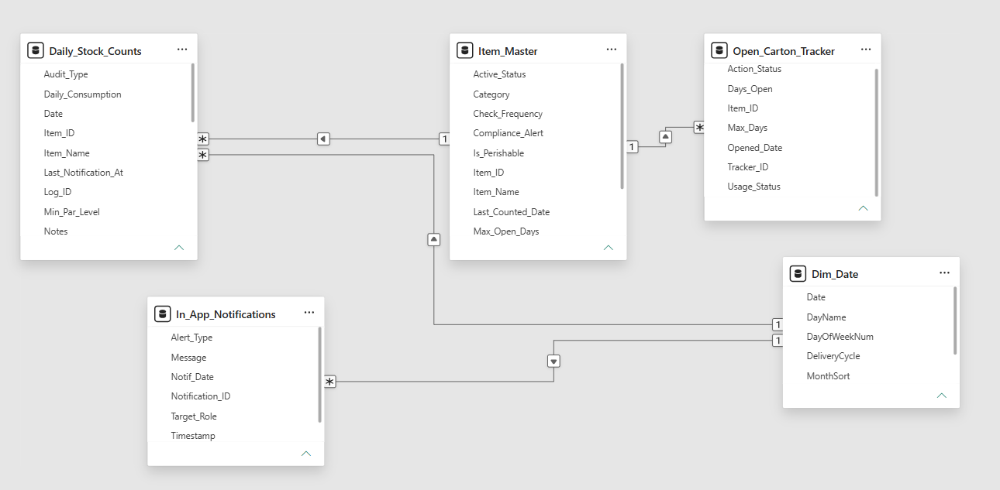
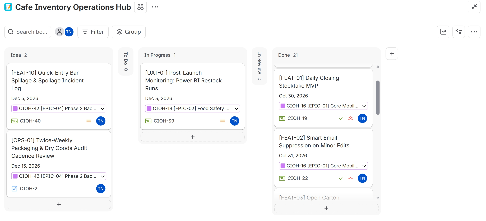
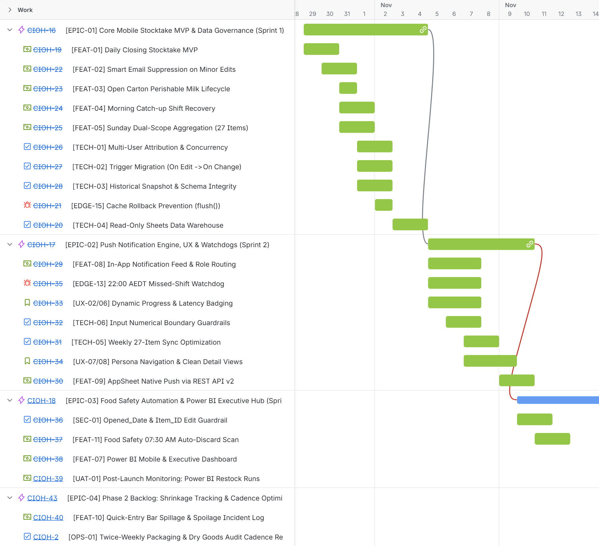
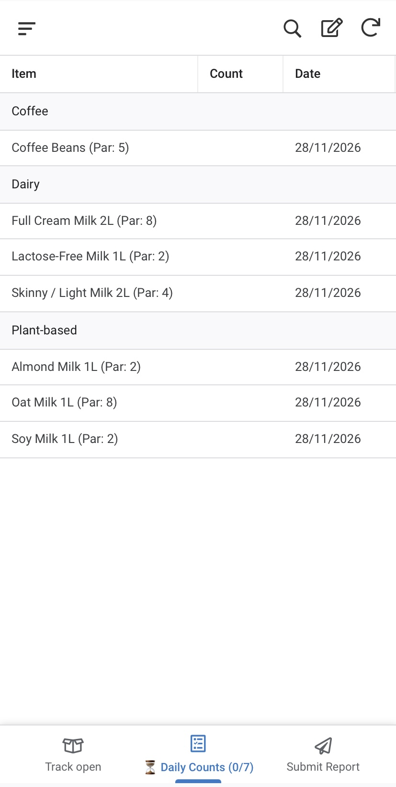
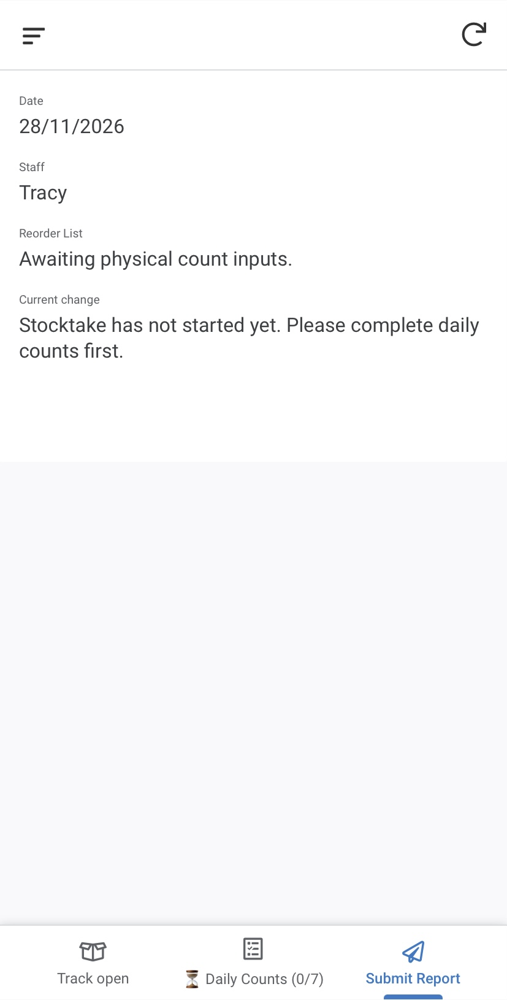
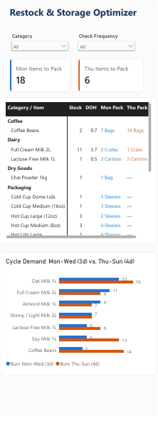
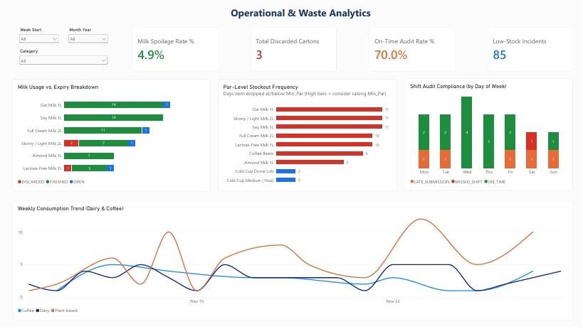

Cafe Inventory Operations Hub:
Stocktake Automation & BI Decision System
End-to-end operational digitization, process mapping, and Star Schema BI reporting for a boutique Melbourne cafe.
Operations Analyst
Requirements Elicitation, BPMN Process Mapping, User Stories, Star Schema, UAT, Agile/Jira
Power BI (DAX), AppSheet, Google Sheets, Apps Script (REST API v2), Jira
1. Business Problem & Quantified Impact
A Melbourne cafe (100-150 daily customers, 2-person shift roster) operated under tight under-counter cold-storage limits (~30-bottle dairy capacity) supplied via bi-weekly warehouse deliveries (Mondays & Thursdays). Manual paper stocktakes caused frequent count omissions, missed replenishment cut-offs, and expired milk wastage.
Stakeholder Elicitation & Adoption: Requirements were gathered through on-floor shift observation and structured interviews with the store supervisor and baristas. Short feedback loops during live trading simplified high-frequency mobile inputs, lifting adoption during peak hours and delivering immediate operational gains:
2. Process Transformation (As-Is vs. To-Be)
| Process Area | As-Is (Legacy Paper Workflow) | To-Be (Automated Digital Hub) |
|---|---|---|
| Shift Stocktake | Paper tally sheets; illegible handwriting and skipped items during closing rushes. | Mobile QuickEdit checklist (7 daily / 27 Sunday items) with input guardrails and live progress badges. |
| Exception Triage | Omitted night counts went unnoticed until morning opening; ad-hoc WhatsApp chasing. | Automated 22:00 AEDT watchdog flags MISSED_SHIFT and triggers a pre-08:00 AM [MORNING CATCH-UP] flow. |
| Perishable Control | Marker dates smudged by condensation; expired milk logged inaccurately as consumed. | Open_Carton_Tracker with immutable open dates (SEC-01), split Used Up vs. Discard actions, and a 07:30 AM expiry bot. |
| Restock & BI | Supervisors estimated Mon/Thu restock quantities without burn-rate visibility. | Structured Google Sheets backend modelled into a Power BI Star Schema, feeding a mobile Restock & Storage Optimizer and waste analytics dashboard. |
3. End-to-End Workflow Architecture (BPMN Swimlane)
Designed a 3-lane BPMN Swimlane separating Frontline Staff (fast data entry), System Automation (validation, locking, and scheduled watchdogs), and Supervisor (exception-driven replenishment):

Figure 1: To-Be BPMN Swimlane illustrating shift audits, 100% completion gates, REST API v2 push alerts, and scheduled watchdogs.
- Decoupled Drafts vs. Final Dispatch (
BR-01&BR-02): Background autosave persists counts continuously while locking Submit Report until 100% of checklist items are validated. - Smart Email Suppression (
BR-05): Hash comparison (REORDER_SNAPSHOT) suppresses duplicate emails when post-submission edits do not alter the reorder list.
Sample User Stories & Acceptance Criteria
US-01Complete Shift Audit Gate (
BR-01): As a store supervisor, I want the app to prevent baristas from submitting an incomplete stocktake, so that daily inventory records remain 100% accurate.
Given a barista is completing the 7-item daily closing checklist, When any required field is left blank, Then Submit Report remains disabled while draft counts autosave in the background.US-02Perishable Milk Governance (
SEC-01): As a store supervisor, I want opened milk carton dates locked after creation, so that staff cannot backdate entries and expired stock is flagged reliably.
Given a barista logs a newly opened milk carton, When the record is saved, ThenOpened_Datebecomes read-only for barista roles and feeds the 07:30 AM food safety expiry scan.
4. Star Schema Data Model & Governance
Structured the backend Google Sheets repository into clean fact and dimension tables, feeding a locked Power BI Star Schema semantic model with scheduled refreshes.

Figure 2: Power BI Star Schema linking transactional audits (Daily_Stock_Counts) and perishable lifecycles to master dimensions.
- Historical Snapshot Parity (
BR-03): StampsMin_Par_Levelstatically upon row generation so future seasonal par-level changes never distort historical compliance records. - Role-Based Access Control (RBAC): Segmented mobile navigation by persona (Barista execution vs. Supervisor oversight) and locked raw backend formulas from manual edits.
Core BI Metrics & DAX Logic
Separating expired milk discards from closed cartons prevents inflated demand baselines, while scoping DOH strictly to daily-audited perishables avoids granularity mismatches with weekly dry-goods checks:
-- Milk Spoilage Rate % (Isolating Expired Discards)
Milk Spoilage Rate % =
VAR Discarded = CALCULATE(COUNTROWS(Open_Carton_Tracker), Open_Carton_Tracker[Usage_Status] = "DISCARDED")
VAR TotalClosed = CALCULATE(COUNTROWS(Open_Carton_Tracker), Open_Carton_Tracker[Usage_Status] IN {"FINISHED", "DISCARDED"})
RETURN
DIVIDE(Discarded, TotalClosed, 0)
-- Days of Stock (DOH) — Scoped to Daily Perishables Only
Days of Stock (DOH) =
VAR Freq = MAX(Item_Master[Check_Frequency])
VAR OverallBurn = AVERAGE(Daily_Stock_Counts[Daily_Consumption])
RETURN
IF(
Freq = "Daily",
ROUND(DIVIDE([Latest On Hand], OverallBurn, 0), 1),
BLANK()
)5. Agile Delivery (Jira) & Field UAT Resolutions
Managed product backlog, sprint velocity, and defect triage in Jira across Sprints 1-3, resolving 15 real-world operational edge cases during live store pilot testing:
| Ticket ID | Operational / Technical Edge Case | Implemented Solution |
|---|---|---|
| EDGE-06 / 15 | Concurrent taps caused duplicate alerts, and background sync rolled back backend REVISED status updates. |
Enforced atomic concurrency locking (LockService) and disk flush (SpreadsheetApp.flush()) prior to lock release. |
| EDGE-14 / TECH-05 | 27-item Sunday stocktakes suffered cumulative UI lag under weak cafe Wi-Fi behind the espresso bar. | Tuned AppSheet sync settings (Automatic updates ON, Delayed sync OFF, Quick sync OFF) for zero-lag entry. |
| SEC-01 / FEAT-11 | Staff could backdate opened milk cartons, and expired cartons risked remaining in fridges at morning opening. | Locked Opened_Date immutability post-creation and scheduled a 07:30 AM food safety scanner pushing FOOD_SAFETY_ALERT notifications. |
| FEAT-09 / UX-08 | Management views distracted baristas, while supervisors missed web-only alerts during store hours. | Segmented bottom navigation by role and integrated AppSheet REST API v2 for instant OS lock-screen push notifications. |

Figure 3a: Jira Board enforcing scope governance (separating unapproved Phase 2 Ideas from active UAT & Done deliverables).

Figure 3b: Jira Timeline mapping 22 work items across 4 Epics with cross-sprint dependency tracking.
6. Live Production Interfaces & Next Iteration
Both the mobile-optimised Power BI Restock & Storage Optimiser and Operational & Waste Analytics reports are live in production for store leadership via AppSheet:
Data Governance Note: All interface previews and BI dashboards below use anonymised, simulated data to protect store confidentiality and commercial sensitivity.

Figure 4a: AppSheet Daily Checklist (0/7 Progress)

Figure 4b: AppSheet Submit Gate Validation (BR-01)

Figure 4c: Power BI Mobile Restock & DOH View

Figure 4d: Power BI Operational Compliance, Stockout Frequency & Milk Waste Analytics
- Active Sprint 3 Optimisation (
OPS-01): Evaluating a Twice-Weekly (Sunday & Wednesday) audit cycle for fast-moving packaging SKUs to align stock visibility with Monday/Thursday deliveries. - Upcoming Backlog (
FEAT-10): Deploying a quick-entry Bar Spillage Incident Log to isolate accidental spills from customer consumption baselines.